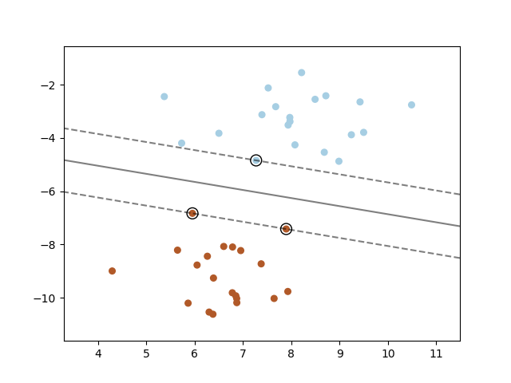
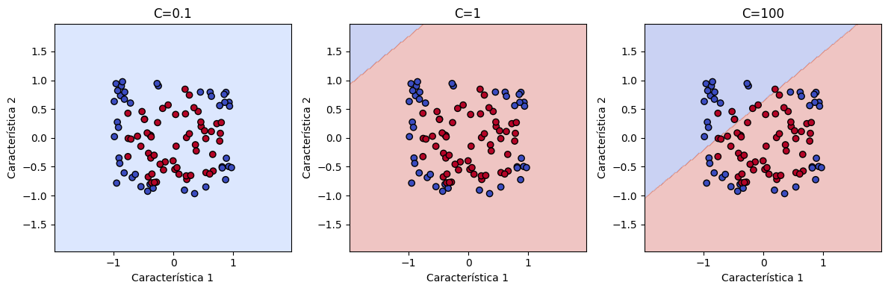
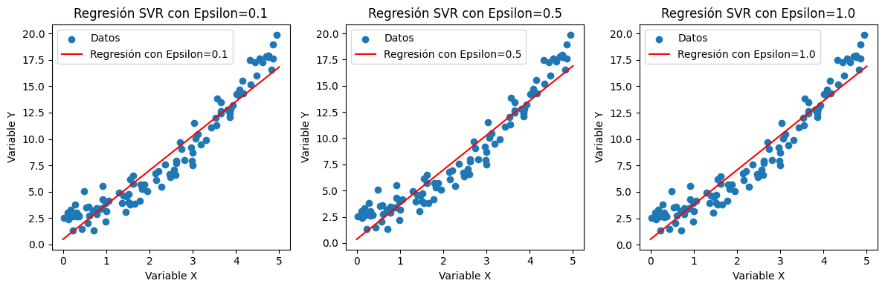

Máquinas de vectores de soporte (SVM)#
Las Máquinas de Vectores de Soporte (SVM) son un tipo de algoritmo de aprendizaje supervisado utilizado tanto en problemas de clasificación como en regresión. El objetivo principal de una SVM es encontrar un hiperplano en un espacio de características que mejor separe los puntos de datos de diferentes clases o se ajuste de manera óptima a los datos en el caso de regresión. El término “vectores de soporte” se refiere a los puntos de datos que son fundamentales para definir el hiperplano óptimo.
{kind=link}
En el caso de clasificación, el hiperplano busca maximizar la distancia entre las clases, lo que se conoce como el margen. Las SVM son particularmente efectivas en espacios de alta dimensión y pueden utilizar funciones de kernel para transformar los datos, permitiendo así abordar problemas no lineales.
Las SVM son conocidas por su capacidad para generalizar bien en conjuntos de datos de entrenamiento pequeños y por su capacidad para manejar datos de alta dimensionalidad. La optimización de las SVM involucra la minimización de la función de pérdida, que penaliza las instancias mal clasificadas, y la maximización del margen entre las clases.
En el contexto de regresión, las SVM buscan encontrar un hiperplano que minimice la diferencia entre las predicciones y los valores reales, permitiendo cierta flexibilidad al introducir una “ventana de tolerancia” alrededor de las predicciones. Este enfoque permite utilizar las SVM de manera efectiva para problemas de regresión.
Entrenar una SVM#
Seguimos con nuestro problema de los seguros y vamos a entrenar un árbol de decisión:
from regression import calculate_error, get_train_test_validation
from sklearn.svm import SVR
X_train, X_test, X_val, y_train, y_test, y_val = get_train_test_validation()
reg = SVR()
reg.fit(X_train, y_train)
y_pred = reg.predict(X_val)
Hiperparámetros de las SVM#
A continuación se muestran algunos de los hiperparámetros que podemos utilizar en las SVM:
| HIPERPARÁMETROS DE UNA SVR | |||
|---|---|---|---|
| Kernel (Núcleo) | El kernel es una función matemática que transforma los datos de entrada en un espacio de características de mayor dimensión. Los kernels comunes incluyen el lineal, el polinómico y el radial (RBF, por sus siglas en inglés). La elección del kernel depende de la naturaleza de los datos y del problema específico que se esté abordando. | ||
| Parámetro de Regularización (C) | El parámetro C controla el equilibrio entre lograr un ajuste suave y hacer que las instancias de entrenamiento se encuentren dentro de la "ventana de tolerancia". Un valor pequeño de C conducirá a un modelo más suave, permitiendo que algunas instancias se sitúen fuera de la ventana de tolerancia, mientras que un valor grande de C buscará un ajuste más ajustado a los datos de entrenamiento. | ||
| Epsilon (ε) | Es un parámetro que determina el tamaño de la "ventana de tolerancia" alrededor de la línea de regresión. Específicamente, controla la cantidad de error que se permite dentro de esta ventana. Un valor más grande de epsilon permite una mayor flexibilidad en la regresión. | Parámetros del Kernel (para kernels no lineales) | Si se utiliza un kernel no lineal, como el polinómico o el RBF, puede haber parámetros adicionales específicos del kernel que deban ajustarse. Por ejemplo, en el caso del kernel polinómico, se puede ajustar el grado del polinomio. |
Vamos a explicar de forma breve un poco las hiperparámetros para que podamos decidir como configurarlos.
Kernel#
La elección del kernel depende en gran medida de la naturaleza de los datos y del problema específico que se esté abordando. Aquí hay algunas consideraciones generales para la elección del kernel:
Lineal (Linear): Este kernel es apropiado cuando los datos son linealmente separables o cuando se sospecha que un modelo lineal es suficientemente complejo para describir la relación entre las variables. Es computacionalmente menos intensivo en comparación con kernels no lineales y puede ser una buena elección cuando hay muchas características.
{kind=link}
Polinómico (Polynomial): Si se sospecha que la relación entre las variables es polinómica, el kernel polinómico podría ser una elección adecuada. Sin embargo, es importante tener cuidado con la elección del grado del polinomio, ya que valores muy altos pueden llevar a modelos sobreajustados.
{kind=link}
Radial (RBF - Radial Basis Function): El kernel RBF es bastante versátil y se utiliza comúnmente cuando la relación entre las variables no es claramente lineal o polinómica. Es útil cuando no se tiene información previa sobre la forma de la relación y puede capturar patrones más complejos. Sin embargo, el RBF tiende a ser más sensible a los hiperparámetros, como el ancho del kernel (gamma).
{kind=link}
Sigmoidal (Sigmoid): Este kernel puede ser útil en situaciones donde la relación entre las variables es similar a una función sigmoide. Se utiliza en problemas de clasificación binaria, pero no es tan común como los kernels lineal, polinómico o RBF.
Parámetro de regularización (C)#
El parámetro de regularización (C) controla el equilibrio entre dos objetivos fundamentales: maximizar el margen entre las clases y minimizar la clasificación errónea de instancias de entrenamiento. Un valor más alto de C penaliza más fuertemente las clasificaciones erróneas, lo que puede conducir a un margen más estrecho pero una clasificación más precisa. Por otro lado, un valor más bajo de C permite un margen más amplio, sacrificando precisión en la clasificación por una mayor tolerancia a errores.
Visualmente, puedes entender la influencia de C en el margen y la clasificación observando cómo cambia la frontera de decisión de la SVM:
Observarás que a medida que C aumenta, la SVM se vuelve más estricta en la clasificación de los puntos y ajusta una frontera de decisión más ajustada para minimizar los errores, mientras que un valor más bajo de C permite un margen más amplio y una mayor tolerancia a errores.
Experimentar con diferentes valores de C es esencial para encontrar un equilibrio adecuado en la SVM, evitando sobreajuste o subajuste en función de la complejidad del problema y la cantidad de ruido en los datos.
Epsilon (ε)#
El hiperparámetro epsilon (ε) define el tamaño de la “ventana de tolerancia” alrededor de la línea de regresión. En otras palabras, ϵ establece la cantidad de error que se permite en las predicciones sin penalizar excesivamente el modelo. Dentro de esta ventana de tolerancia, no hay penalización para las instancias de entrenamiento, mientras que las instancias que quedan fuera de la ventana se ven penalizadas.
Los gráficos muestran cómo la línea de regresión varía al cambiar el tamaño de la ventana de tolerancia. Un valor más alto de ϵ permite un ajuste más flexible, mientras que un valor más bajo hace que el modelo sea más rígido y penaliza las desviaciones de la línea de regresión.
Experimentar con diferentes valores de ϵ es crucial para adaptar el modelo a la naturaleza específica de los datos y la cantidad de ruido presente. Un ϵ demasiado pequeño puede resultar en un modelo demasiado ajustado, mientras que un ϵ demasiado grande puede dar lugar a un modelo que no se ajusta lo suficientemente bien a los datos.